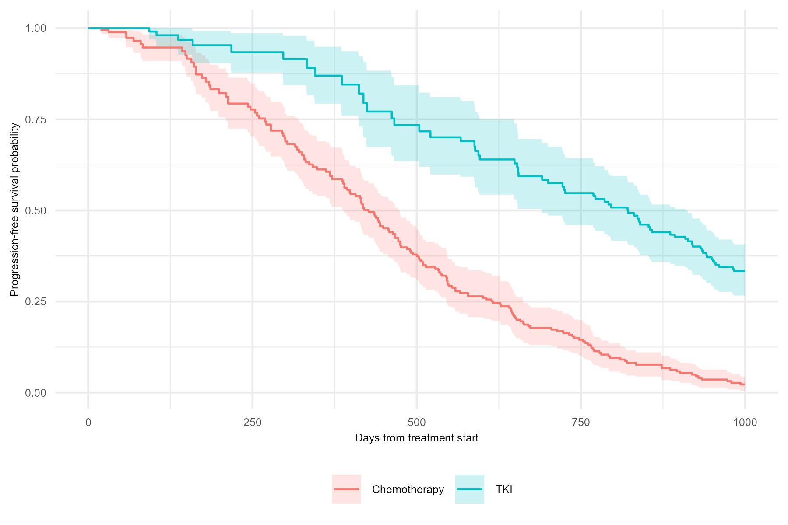

Single-Event IPCW: Guided Example
Source:vignettes/single-event-guided-example.Rmd
single-event-guided-example.RmdThis vignette demonstrates inverse probability of censoring weighting (IPCW) for a single-event survival outcome. We use a simulated dataset that mimics a clinical trial of patients with chronic myeloid leukemia. The primary endpoint is progression-free survival (PFS). Participants are randomized to receive either chemotherapy or a tyrosine kinase inhibitor (TKI). Participants can be censored for the primary endpoint due to treatment intolerance or excessive toxicity, which is expected to occur equally for the two treatment groups. Treatment group is the factor of interest in this study. Dependent censoring arises because participants with higher absoluate neutrophil count (ANC) at baseline are less likely to go off study due to treatment intolerance, and therefore to be censored for PFS, and are also less likely to experience a progression or die.
Simulate data and compute IPCW weights
First, create a simulated dataset of n=500 patients
using the sim_data_se() function. Key parameters
include:
-
t: observed time (event or censoring) -
delta: event indicator (1 = event, 0 = censored) -
x: treatment (0 = chemotherapy, 1 = TKI) -
W2: ancillary biomarker that drives informative censoring (ANC)
set.seed(20240429)
dat <- sim_data_se(n = 500)get_ipcw_wgt() converts the wide dataset to
counting-process (long) format and appends the unstabilized IPCW weight
column wgt.
dat_long <- get_ipcw_wgt(dat)IPCW Kaplan-Meier curves
The chunk below requires the ggsurvfit package. Install it from CRAN if it is not already installed. We plot the IPCW Kaplan-Meier estimates.
# install.packages("ggsurvfit")
library(ggsurvfit)
#> Loading required package: ggplot2
km_fit <-
survfit2(
Surv(tstart, tstop, delta) ~ x,
data = dat_long,
weights = wgt,
timefix = FALSE)
ggsurvfit(km_fit) +
xlim(c(0, 1000)) +
scale_color_hue(labels = c("Chemotherapy", "TKI")) +
labs(
x = "Days from treatment start",
y = "Progression-free survival probability"
)
To get an appropriate variance estimate, we need to account for the
fact that the IPCW are estimated from the data. We do this using
bootstrapping and produce a Kaplan-Meier plot with bootstrap-based
pointwise confidence intervals. First, generate the bootstrapped
datasets with weights using the function get_ipcw_boot().
Note that depending on the size of the data and the number of bootstrap
samples, the bootstrapping step can take some time to run.
boot_dat <-
get_ipcw_boot(
data = dat,
B = 500,
time_var = "t",
event_var = "delta",
cens_cov = "W2",
seed = 20240917)Then, create the plot with the plot_ipcw_km_boot_ci()
function. This too can take some time due to the large size of the
boostrapped data and the calculation of the pointwise confidence
intervals, so the below code is not executed here.
plot_base <-
plot_ipcw_km_boot_ci(
boot_data = boot_dat,
orig_data = dat_long,
pre_times = seq(0, 2429, 1),
covariate = "x",
weight_var = "wgt",
event_var = "delta")
plot_base +
xlim(c(0, 1000)) +
scale_color_discrete(labels = c("Chemotherapy", "TKI")) +
scale_fill_discrete(labels = c("Chemotherapy", "TKI")) +
labs(
color = "",
fill = "",
x = "Days from treatment start",
y = "Progression-free survival probability"
) +
theme(legend.position = "bottom",
axis.text = element_text(size = 6),
axis.title = element_text(size = 6),
legend.text = element_text(size = 6))
IPCW Cox regression
Estimate the hazard ratio (HR) for the association between treatment group and PFS, accounting for the dependent censoring.
Use the convenience wrapper get_ipcw_cox_fit() to obtain
a tibble of results from the weighted Cox regression model.
cox_fit <- get_ipcw_cox_fit(dat_long, weight = "wgt")
cox_fit
#> # A tibble: 1 × 7
#> term log_hr log_hr_se log_hr_rob_se hr hr_ci_low hr_ci_high
#> <chr> <dbl> <dbl> <dbl> <dbl> <dbl> <dbl>
#> 1 x -1.21 0.103 0.162 0.298 0.217 0.410Then we fit the Cox model to each of the bootstrap datasets and
extract the log(HR) from each model fit. These will be used to construct
bootstrap percentile intervals. Because this process takes some time,
the resulting object cox_boot_lhr is included in this
package.
# Fit the Cox model to the B bootstrap samples
cox_boot_fit <-
boot_dat |>
map(~ get_ipcw_cox_fit(., covariate = "x", weight = "wgt"))
# Extract the B log HRs
cox_boot_lhr <-
map_dbl(cox_boot_fit, "log_hr")Use the function get_boot_pci() on a dataframe of the
log(HR)s to obtain the bootstrap-based 95% confidence interval.
# Calculate the bootstrap percentile interval
boot_pci <- get_boot_pci(data.frame(log_hr = cox_boot_lhr))And combine the results into a table:
result_tab <- data.frame(
Scale = c("log(HR)", "HR"),
Estimate = round(c(cox_fit$log_hr, exp(cox_fit$log_hr)), 2),
Lower_95pct_PI = round(c(boot_pci[[1]], exp(boot_pci[[1]])), 2),
Upper_95pct_PI = round(c(boot_pci[[2]], exp(boot_pci[[2]])), 2)
)
result_tab
#> Scale Estimate Lower_95pct_PI Upper_95pct_PI
#> 1 log(HR) -1.21 -1.55 -0.95
#> 2 HR 0.30 0.21 0.39